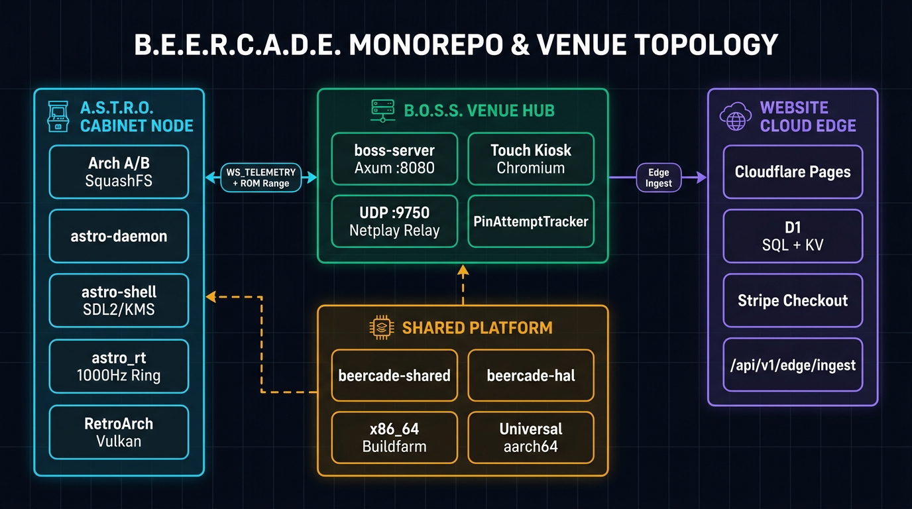
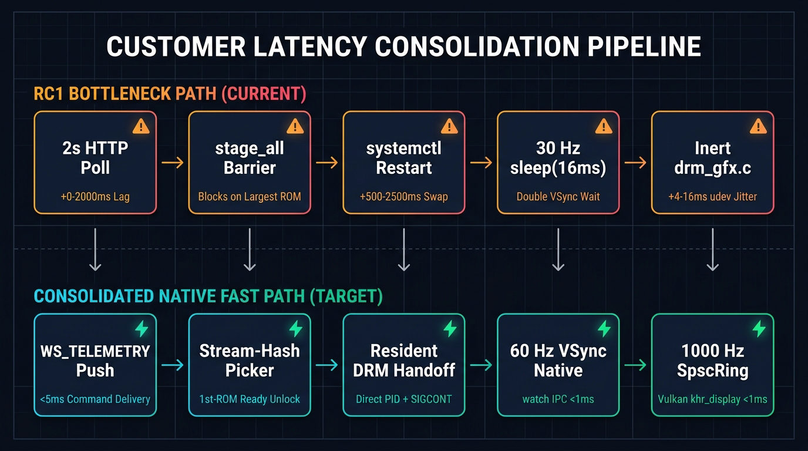
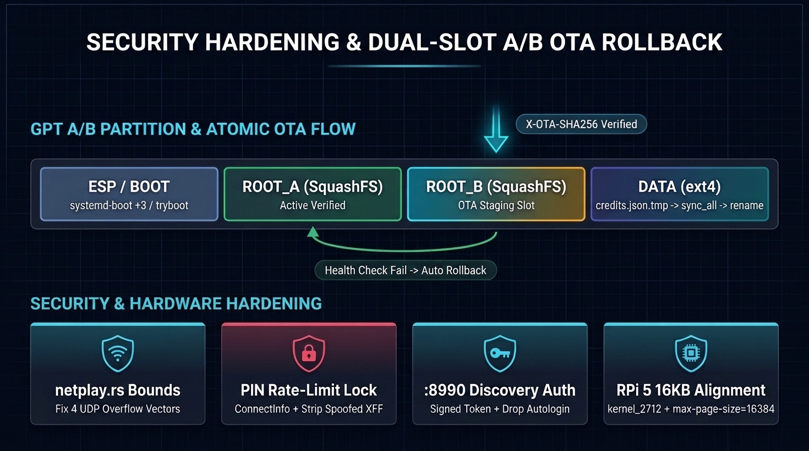
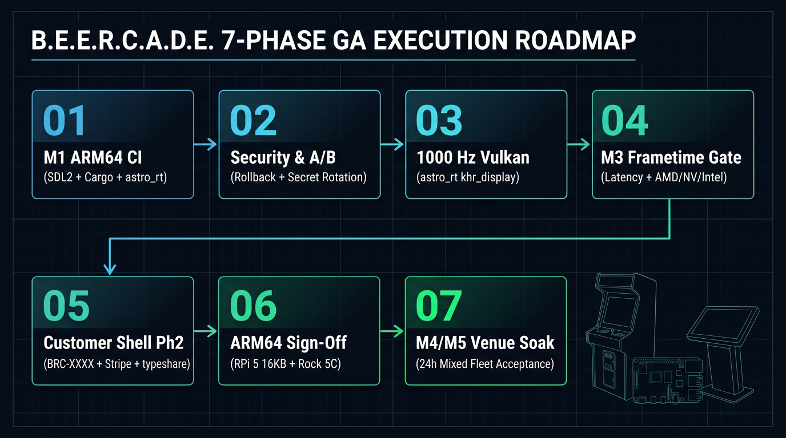

B.E.E.R.C.A.D.E. RC1 Verification, Hygiene & GA Completion Report
astro-shell check OK (Linux SDL2 link needed)boss/kiosk_ui + website svelte-check & wrangler OKu-boot* & *.mp4 preservednetplay.rs UDP vectors, PIN XFF bypass, `:8990` hijack, Slot B unbootable
Click to Zoom1. RC1 / Phase-1 Verification & Commit Record
Verified 47-file baseline commit on local main (5757f34, +4,718 / -1,186 lines) with invariant inspection and exclusion discipline.
1.1 Crate & Frontend Verification Matrix (Click any card for details)
1.2 Mandatory RC1 Invariants
1.3 Committed Files vs. Exclusions & Caveats
2. Graphify & Memory Sync Delta
Source-only AST + Cargo graph rebuilt via .graphifyignore; compared against archived 2026-10-01 dump, OpenViking status, and doc drift.
Graph Bloat Elimination
OpenViking & Migration Status: OpenViking MCP (https://viking.3hx.au/mcp) is unattached in this session (proceeded locally per AGENTS.md). GEMINI.md does not exist; AGENTS.md serves as the effective successor while untracked CLAUDE.md remains a redundant 10-line subset.
Top 15 God-Nodes (Edges)
2.1 Graphify Query Traces & Docs-vs-HEAD Drift
PinAttemptTracker: connectsboss/src/state.rs:170→AppState:290,PinAttemptRecord:163,check_lockout(),record_failure_at().astro_input_drain: isolated inastro/rt/src/input_evdev.cpp:241&SpscRing::drain()— 0 call edges from Rust or Vulkan paths.NodeTelemetry: linkssample_telemetry():268→sample_input_jitter():221(returns0.0); 0 links to TypeScript files.
ROADMAP_x86_64.md:50-52still lists optional thermals as open (alreadyOption<f32>);:135-193targets ES-DE despiteastro-shell.OPTIMIZATION_BACKLOG.md:61-76marks B1–B10 done, yet ARM64 B.O.S.S. is untested on Pi hardware and Slot B is unbootable.ASTRO_CUSTOMER_SHELL_PLAN.mdPhase 1 landed onastro, whilebosslacks purchase picker,BRC-XXXX, andset_node_session().
3. Customer-Latency Consolidation Simulator & Ranked Plan (#1–#10)
Toggle individual consolidations below to project customer-facing responsiveness gains derived from observed code timers, polling loops, and spawn paths.

Click to ZoomSelect Consolidations to Model
Modeled Customer-Facing Latency Telemetry
3.1 Ranked Consolidation Deep-Dive (#1–#10)
4. Storage Cleanup Ledger & Tracked Dead-File Hygiene
Discretionary purge reclaimed 46,631,045,810 B (43.43 GiB) of unmanaged/ignored OS images & old Graphify caches while preserving every u-boot*, *.mp4, and tracked file.
4.1 Tracked Dead Files, Obsolete Scripts & Conflicting Configs
| Category | Tracked Path(s) | Proof / Conflict | Verdict |
|---|
5. Security, Panic Surface, A/B Rollback & RPi 5 16 KB Audit
Full audit of network-reachable UDP panics in netplay.rs, hardcoded image secrets, PIN lockout bypass, and dual-slot bootability gaps.

Click to Zoom6. Prioritized 7-Phase GA Execution Roadmap
Dependency-ordered phases with interactive exit-criteria checklists (persisted in localStorage).

Click to Zoom7. Architecture Visuals Gallery
All 4 generated 16:9 technical illustrations stored under docs/reports/assets/. Click any card to inspect full-screen.